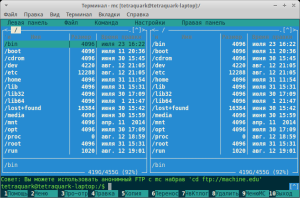

Тема кросс-компиляции несомненно важная. В процессе работы над различными проектами, вполне возможно, что появится необходимость в компиляции программы под различные архитектуры без прямого доступа к устройствам на нужной архитектуре. Самый обычный пример — скомпилировать файловый менеджер для машинки Raspberry Pi, но делать это непосредственно на «пироге» затея, предполагающая потратить кучу времени на ожидание (не учитывая различные проблемы и ошибки, которые, уж поверьте, будут).
Поэтому я посвящу пару записей на данную тему, поскольку подобные задачи недавно возникали у меня, с которыми мне все-таки удалось справится. И мне бы хотелось поделится полученным опытом с общественностью.
Собственно, какая задача, какие исходные данные, какие средства. Задача — скомпилировать известный файловый менеджер Midnight Commander (mc) под систему с архитектурой ARM. В наших руках компьютер с процессором Intel, с операционной системой Ubuntu 14.04. В качестве компилятора будем использовать пакет gcc-4.7-arm-linux-gnueabi, который отлично пребывает на репозиториях. Исходный материал — исходные коды необходимых библиотек и код самого mc.
Сперва начнем с простого — установка инструментов для кросс-компиляции. Происходит все это очень просто:
# apt-get install gcc-4.7-arm-linux-gnueabi
# apt-get install gcc-arm-linux-gnueabi
Это дело работает как gcc, вызывать компилятор можно так: arm-linux-gnueabi-gcc. Все возможности смотрите тут: man arm-linux-gnueabi-gcc.
Шаг 2 — загружаем исходники. На потребуются следующие исходники:
Это минимальный список исходников, которые позволят успешно использовать mc. Я забочусь о читателях, поэтому архивчик со всеми необходимыми исходниками можно загрузить ниже (если ссылка битая, или еще чего нибудь приключилось, то придется искать самостоятельно).
Шаг 3 — подготовка к кросс-компиляции. Сейчас нам необходимо подготовить скаченные исходники к компиляции. Но сначала один нюанс — мне так и не удалось скомпилировать mc с относительными путями. Кто не в курсе, проблема вот в чем — при компиляции определенных библиотек, им необходимо указывать пути до уже скомпилированных зависимых библиотек. Собственно, при компиляции самого mc нужно скармливать ему вышеприведенные либы. Указав полные пути (а конфигурационные скрипты почему то требуют указывать именно абсолютные пути), ваш mc запустится только по таким путям файловой системы, в которых все было скомпилированно. Например, если вы решили все собрать тут: /home/username/arm_mc, то ваша программа на другом компьютере запустится лишь только в /home/username/arm_mc, при условии что все зависимые библиотеки также находятся в тех местах, на которые указывалось при кросс-компиляции. Это проблема, которую я не смог решить, буду очень благодарен, если кто либо расскажет, как правильно это сделать.
Поэтому для нашего случая мы воспользуемся самым простым вариантом: все компилировать будем сюда /tmp/mc_build/builds, и запускать все будем также по тому пути (если вы решились делать так, то не забывайте особенность каталога tmp — после перезагрузки системы, данный каталог чистится).
Поэтому делаем следующее:
$ mkdir /tmp/mc_build
$ mkdir /tmp/mc_build/builds
$ mkdir /tmp/mc_build/sources
В каталог /tmp/mc_build/sources кладем наш архив mc_src.tar.gz и выполняем разархивацию в данный каталог содержимого всех архивов руками, либо так (перед выполнением сначала перейдите в каталог с архивом):
$ tar -xf mc_src.tar.gz && for f in *.tar*; do tar xf $f; done
Шаг 4 — компиляция. Процесс компиляции на самом деле очень прост, за нас, по сути, разработчики уже позаботились, создали скрипты конфигурации и make-файлы, которые всю грязную работу выполняют сами. От нас лишь требуется правильно предоставить требуемые зависимости и скормить скриптам нужные флаги и параметры. Как это делать будем мы: необходимо будет создавать исполняемый bash-скрипт в корне каталога компилируемой библиотеки, прописывать в данный скрипт нужные команды и выполнять этот скрипт. Собственно, займемся данным, достаточно рутинным, процессом. Для первой библиотеки я распишу полную последовательность команд, для оставшихся я приведу лишь тексты bash-скриптов.
Компиляция check-0.10.0:
Создаем файл скрипта в коре:
$ touch /tmp/mc_build/sources/check-0.10.0/my_make
Открываем его любым текстовым редактором, например:
$ nano /tmp/mc_build/sources/check-0.10.0/my_make
Копируем в этот файл следующий текст:
#!/bin/bash ARCH=arm \ CC=arm-linux-gnueabi-gcc ./configure \ --host=arm-linux-gnueabi \ --prefix=/tmp/mc_build/builds/build_check-0.10.0/ \ --enable-static=yes make sudo make install
|
1 2 3 4 5 6 7 8 |
CC=arm-linux-gnueabi-gcc ./configure \ |
Даем данному скрипту права на выполнение:
$ chmod 755 /tmp/mc_build/sources/check-0.10.0/my_make
И выполняем данный скрипт:
$ cd /tmp/mc_build/sources/check-0.10.0
$ ./my_make
В случае успешного завершения процесса компиляции, в каталоге /tmp/mc_build/builds/ будет лежать каталог build_check-0.10.0 — это продукт нашей компиляции. В случае если такого каталога нету, либо он пустой — произошла ошибка, необходимо читать что нам в консоли сообщает make, либо скрипт configure и пытаться исправить. Для справки, где есть полезная информация, можно выполнить следующее:
$ /tmp/mc_build/sources/check-0.10.0/configure —help
Таким же образом происходит компиляция всего остального (копируете скрипт my_make, даете ему права на исполнение, запускаете, надеетесь, чтобы не было ошибок). Поэтому далее я лишь приведу скрипты my_make для каждой библиотеки. Компилировать, кстати, библиотеки нужно в том порядке, в котором я привожу тексты скриптов.
Компиляция libffi-3.2.1:
#!/bin/bash ARCH=arm \ CC=arm-linux-gnueabi-gcc ./configure \ --host=arm-linux-gnueabi \ --prefix=/tmp/mc_build/builds/build_libffi-3.2.1 \ --enable-static=yes make sudo make install
|
1 2 3 4 5 6 7 8 |
CC=arm-linux-gnueabi-gcc ./configure \ |
Компиляция zlib-1.2.8:
UPD: У некоторых при использовании данного скрипта для компиляции zlib появляются ошибки вроде:
"Compiler error reporting is too harsh for ./configure (perhaps remove -Werror). ** ./configure aborting."
|
1 |
"Compiler error reporting is too harsh for ./configure (perhaps remove -Werror). ** ./configure aborting." |
Логи configure.log говорят, что, почему то, arm-linux-gnueabi-gcc не понимает строку
|
1 |
в данном скрипте. Поэтому решение — убрать (закомментировать) эту строчку из нижеприведенного скрипта.
#!/bin/bash ARCH=arm \ CC=arm-linux-gnueabi-gcc ./configure \ --static \ --archs="-arch arm" make sudo make install DESTDIR=/tmp/mc_build/builds/build_zlib-1.2.8
|
1 2 3 4 5 6 7 |
CC=arm-linux-gnueabi-gcc ./configure \ sudo make install DESTDIR=/tmp/mc_build/builds/build_zlib-1.2.8 |
Компиляция ncurses-5.9:
#!/bin/bash ARCH=arm \ CC=arm-linux-gnueabi-gcc ./configure \ --target=arm-linux-gnueabi \ --with-gcc=arm-linux-gnueabi-gcc \ --host=arm-linux-gnueabi \ --prefix=/tmp/mc_build/builds/build_ncurses-5.9 \ --enable-static=yes make sudo make install
|
1 2 3 4 5 6 7 8 9 10 |
CC=arm-linux-gnueabi-gcc ./configure \ --with-gcc=arm-linux-gnueabi-gcc \ |
Компиляция glib-2.44.1:
UPD: как справедливо заметили в комментариях, в процессе сборки могут появиться ошибки о проблемах с glib-genmarshal. Предложенный вариант решения — установка пакета:
# sudo apt-get install libglib2.0-dev
Должно заработать.
#!/bin/bash echo "glib_cv_stack_grows=no" > arm-linux.cache echo "glib_cv_uscore=no" >> arm-linux.cache echo "ac_cv_func_posix_getpwuid_r=no" >> arm-linux.cache echo "ac_cv_func_posix_getgrgid_r=no" >> arm-linux.cache ARCH=arm \ CC=arm-linux-gnueabi-gcc ./configure \ ZLIB_CFLAGS="-I/tmp/mc_build/builds/build_zlib-1.2.8/usr/local/include/" \ ZLIB_LIBS="-L/tmp/mc_build/builds/build_zlib-1.2.8/usr/local/lib -lz" \ LIBFFI_CFLAGS="-I/tmp/mc_build/builds/build_libffi-3.2.1/lib/libffi-3.2.1/include" \ LIBFFI_LIBS="-L/tmp/mc_build/builds/build_libffi-3.2.1/lib -lffi" \ --host=arm-linux-gnueabi \ --prefix=/tmp/mc_build/builds/build_glib-2.44.1 \ --enable-static=yes \ --cache-file=arm-linux.cache make sudo make install
Компиляция mc-4.8.14:
#!/bin/bash ARCH=arm \ CC=arm-linux-gnueabi-gcc ./configure \ CHECK_CFLAGS="-I/tmp/mc_build/builds/build_check-0.10.0/include/" \ CHECK_LIBS="-L/tmp/mc_build/builds/build_check-0.10.0/lib/ -lcheck" \ GLIB_CFLAGS="-I/tmp/mc_build/builds/build_glib-2.44.1/include/glib-2.0 -I/tmp/mc_build/builds/build_glib-2.44.1/lib/glib-2.0/include" \ GLIB_LIBS="-L/tmp/mc_build/builds/build_glib-2.44.1/lib -lglib-2.0" \ GMODULE_CFLAGS="-I/tmp/mc_build/builds/build_glib-2.44.1/include/glib-2.0 -I/tmp/mc_build/builds/build_glib-2.44.1/lib/glib-2.0/include" \ GMODULE_LIBS="-L/tmp/mc_build/builds/build_glib-2.44.1/lib/glib-2.0 -lgmodule-2.0" \ --host=arm-linux-gnueabi \ --prefix=/tmp/mc_build/builds/build_mc-4.8.14 \ --enable-static=yes \ --with-screen=ncurses \ --with-ncurses-includes="/tmp/mc_build/builds/build_ncurses-5.9/include" \ --with-ncurses-libs="/tmp/mc_build/builds/build_ncurses-5.9/lib" make sudo make install
В случае, если у вас после все выше проделанного появилась папочка /tmp/mc_build/builds/build_mc-4.8.14 — поздравляю, у вас, наверно, удалась кросс-компиляция файлового менеджера Midnight Commander под архитектуру ARM.
Далее действия просты — загружаем каталог /tmp/mc_build/builds на нужную систему по одноименному пути, и запускаем mc: /tmp/mc_build/builds/build_mc-4.8.14/bin/mc. Все должно работать.

Для знатоков — в данном примере в качестве графической библиотеки использовалась библиотека ncurses, поскольку это попроще в плане сборки. Есть вариант использовать библиотеку slang (для данного примера версии 2.3.0), но это более сложная задача, поскольку slang имеет слегка больше зависимостей. Можете попробовать, у меня пока не получилось.
Всем спасибо, ставьте лайки, подписывайтесь на мой канал, всем пока!
Архив со всеми исходниками: ССЫЛКА